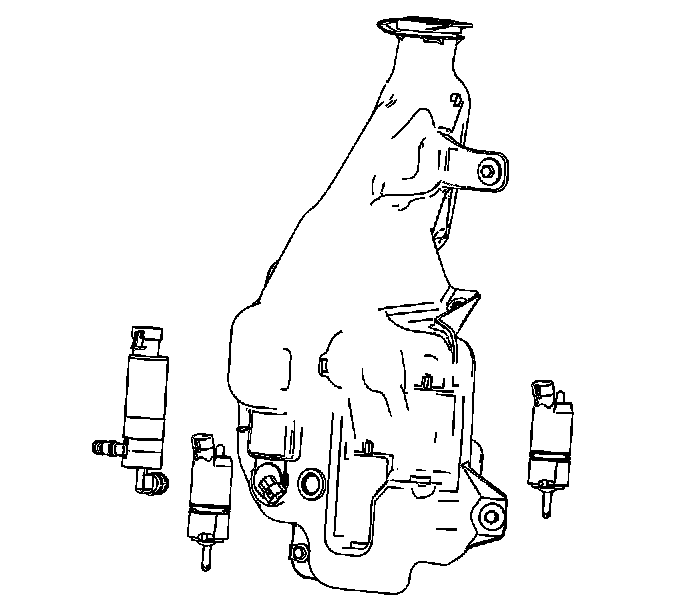

Windshield Washer Reservoir: Service and Repair
Windshield Washer Solvent Container Replacement
Removal Procedure
1. Open the hood.
2. Remove the washer solvent container cap from the container.

3. Remove the lower air deflector. Refer to Front Air Deflector Replacement (Service and Repair) .
4. Remove the front bumper fascia. Refer to Front Bumper Fascia Replacement (Front Bumper Fascia Replacement) .
5. Remove the passenger side headlamp for LHD or the driver side headlamp for RHD. Refer to Headlamp Replacement (Service and Repair) .

6. Drain the solvent from the washer solvent container.
7. Disconnect the washer hoses from the washer pumps.
8. Disengage the electrical harness retainer clip from the washer solvent container.
9. Disconnect the electrical connectors from the washer pumps and washer solvent level sensor.
10. Remove the fasteners from the washer solvent container.
11. Guide the fill neck down through the radiator support.
12. Remove the washer solvent container from the vehicle.

13. Remove and transfer the following components from the washer solvent container:
* The washer pumps
* The washer level sensor
* The horizontal bracket
* The washer container cap
Installation Procedure
1. Install the following components to the washer solvent container:
* The washer pumps
* The washer level sensor
* The horizontal bracket
* The washer container cap
2. Position the washer solvent container filler neck up through the radiator support.
3. Engage the electrical harness retainer clip to the washer solvent container.
Notice: Refer to Fastener Notice (Fastener Notice) .
4. Install the solvent container fasteners.
Tighten the solvent container fasteners to 6 N.m (53 lb in).
5. Connect the washer hoses to the washer pumps.
6. Connect the electrical connectors to the washer pumps.
7. Connect the electrical connector to the washer solvent level sensor.
8. Install the headlamp assembly. Refer to Headlamp Replacement (Service and Repair) .
9. Install the front bumper fascia. Refer to Front Bumper Fascia Replacement (Front Bumper Fascia Replacement) .
10. Install the lower air deflector. Refer to Front Air Deflector Replacement (Service and Repair) .
11. Install the bolt to secure the washer solvent container filler neck to the upper tie bar.
Tighten the bolt to 6 N.m (53 lb in).
12. Fill the washer solvent container.
13. Install the washer solvent container cap to the washer solvent container.
14. Close the hood.